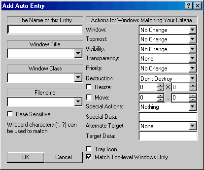

Hack-It v4.0 Help |
| Automatic Functions |
|
Perhaps the most powerful feature of Hack-It is Automatic Functions. All of the
basic operations, and several additional ones, can be set up to automatically
fire when windows of a certain specification appear on your system. By
specifying a window title, class, or an application file name, you can have an
window automatically modified in several ways.
 Name: Each Automatic
Function must have a unique name, to distinguish it in the list of all
functions. Enter a short, descriptive name into this field to identify
this function. Window Title: This
field specifies the criteria for matching a window based on its title. The
drop-down contains a list of the titles of all windows that currently
exist on the system, to make it simpler to select a given title and create
a criteria from it. You can also enter in any specification you wish,
using wildcard characters. Keep in mind that part or all of a window’s
title might change, so try to create criteria for window title that will
work across all windows you wish to affect. For example, to make Notepad
windows stay always-on-top, enter “* - Notepad” and select Always On
Top from the Topmost action list. Window Class: Each
window on your system is created with a named class. These classes help
Windows identify groups of windows that behave the same way. Multiple
windows in different applications and with different content very often
have the same class. By matching to a window’s class, you can create an
autofunction criteria that affects the same kind of windows wherever they
are found. This field lets you enter criteria based on a window’s class.
The dropdown contains a list of all window classes that currently exist on
the system. You can use an entry in this list to build your criteria. You
can also determine the class of a window by selecting it in the Hack-It
Window List (the class will be displayed in the status bar) or by right
clicking the window in the Window List and selecting Window ->
Information… The dialog presented will show the window’s class.
Example: To make all Calculator windows start with a tray icon, enter
“SciCalc” in the Window Class field and check the “Tray Icon”
checkbox. Alternate: With Calculator running, find “SciCalc” in the
list of all window classes and continue from there. Filename: All windows
are created by applications running on your system. This field allows you
to specify criteria based on the filename of those applications. The
dropdown contains a list of the filenames of all applications currently
running on the system. You can select the appropriate filename from this
list, and possibly make modifications to it. If you know the filename, you
can just enter it into this field directly. Matching an Automatic Function
based on filename guarantees that all the windows created by a given
application will be affected, and only the windows created by that
application will be affected. It is generally used in combination with the
other criteria, but can also be used alone. Example: To make all Hearts
windows minimize when they are first created, enter “*MSHEARTS.EXE” in
the Filename field and select ‘Minimize’ from the Window action list.
Alternate: With Hearts running, select the appropriate filename from the
Filename dropdown and continue from there. Case Sensitive:
Criteria used for matching (Window Title, Window Class, and Filename) are
not normally case sensitive, i.e. ‘*Notepad’, ‘*notepad’, and
‘*NOTEPAD’ will all match the same windows. Checking this box enforces
case-sensitive matching for all criteria. Window Actions:
Actions available in this dropdown affect the standard size and position
of the window, allowing you to Minimize, Maximize, or Restore the window.
A Minimized window appears only as a button on the taskbar. A Maximized
window is the size of the desktop, and covers all other non-topmost
windows when it is active. A Restored window floats at a given position
and size on the desktop. It only covers windows directly beneath it when
maximized, and can be moved and sometimes resized by the user. Topmost Actions:
These actions allow you to set whether a window is Topmost, Normal,or
Bottommost. When windows are drawn on the screen, Bottommost windows
always appear beneath Normal windows, which in turn always appear beneath
Topmost windows. Looked at another way, Topmost windows are always drawn
on top of Normal windows, which are always drawn on top of Bottommost
windows. This ordering occurs whether a given window is active or not.
Most windows on the system are in the Normal state. Within each group
(Bottom windows, Normal windows, Top windows), the standard placement
occurs (currently active window is drawn on the top of the other windows
in the group, the second-most-recently-active window is drawn just below
it, and so on). By selecting an action from this list, you can chang the
topmost status of a matched window. Visibility Actions:
The Visibility actions allow you to modify if a window is Visible or
Hidden. Visible windows are windows that appear on the screen: on the
desktop if they are restored or maximized; and/or as a button on the
taskbar if they have a a taskbar icon. Minimized windows are still
considered Visible, even though they do not appear on the desktop. Hidden
windows do not appear in the task list, on the taskbar, or on the desktop,
and cannot be manipulated without a tool like Hack-It. Most windows on a
system are Hidden, since there are many, many applications running on a
given system that never require direct user input, or don’t require user
input at all. Selecting actions from this list allow you to make a matched
window be Visible or Hidden automatically. It is especially useful for
making windows that are always running on your system, but that you never
directly interact with (such as status windows, company-mandated progams,
banner ads associated with internet service), be hidden and remain
out-of-sight. Transparency Actions:
On Windows 2000 and Windows XP systems, any top-level window can be drawn
with varying levels of Transparency. Selecting a percentage from this
action list allows you to set a matched window to a given transparency
level. Transparent windows are drawn so that windows beneath them can be
partially seen, even when the window is active. This feature is very
useful for windows that you wish to have always be visible but not block
windows beneath them. For example, an AIM buddy list can be made Topmost
with a 50% transparency. Now your buddy list will always be visible, but
will not block windows beneath it. Transparency is not supported on
earlier versions of Windows (95, 98, ME). Priority Actions:
All applications on your system run at a specific priority level, normally
at the “Normal” priority. Actions in this list let you set a priority
that the application associated with a matched window should run at.
Applications are given access to the processor and key system resources
based on their priority level. Idle is the lowest, followed by Normal,
High, and Real-Time. Applications at the Idle priority receive the least
amount of processor time, usually when other applications are using the
processor. Normal is the standard priority for most applications. High
priority applications receive more processor time and faster access to
system resources (memory, persistant storage, sound and video), at the
expense of lower-priority applications. On an internet server, the Web
Server application might be given a High priority to keep it responding
quickly to web hits. Real-Time is the highest priority, and is usually
given only to system applications and processes. Real-Time priority
applications are considered first for processor time and access to system
resources, at the expense of all others. Applications which must always be
immediately responsive or have immediate access to resources are good
candidates for Real-Time priority. Destruction Actions:
Actions in this list allow you to instantly Close a matched window or End
Task the window’s application. Closing a window has the same effect as
clicking the “X” icon on the window’s title bar. For applications
with only one window, this often terminates the application. End Tasking a
window (really, its associated application), causes the application to be
forcibly terminated, at the system level. Any unsaved information is lost,
and the program stops running immediately. The Close action is useful for
getting rid of windows that pop up at inconvenient times, such as banner
ads or informational messages that are anything but informative. The End
Task action is useful for terminating an application completely, as soon
as a given window associated with the application appears on the system.
Take care using End Task in autofunctions. Incorrect criteria could cause
unexpected results, such as programs you didn’t intend to affect being
terminated immediately. Resize Action: This
action allows you to specify a specific size you want a matched window to
be set to. Most windows start out with a specific size, usually programmed
into them. This action is useful for changing the size of windows that
start out at an inconvenient size. The format for the size is [width] X
[height] Move Action: This
action allows you to move a matched window to any position on the screen.
The coordinates [horizontal], [vertical] are specified on the screen, with
the upper-left corner being (0,0) and the lower-right corner being 640,480
or 800,600 or 1024,768, according to your screen resolution. The window is
positioned with its upper-left corner at the position you specify. Special Actions: The only available Special Action, Press Button, allows you to press a given button matched by the Auto Entry criteria. This feature is used in combination with the Special Data field. Using the Press Button action, you can have Hack-It automatically press a specific button when a window appears matching your criteria. You can use the Window List to discover pressable buttons on any window. Example: To have Hack-It put the Calculator (in Scientific mode) into Hex number mode when it appears, do the following:
Special Data: See
Auto Entry Special Actions. Alternate Target: Often, you will want an Automatic Function to affect the child or parent of a matched window, rather than the window itself. By specifying Act On Child in this list, and providing the name of a child window in the Target Data field, you can cause the actions for this auto function to affect the specified child window. By specifyin Act On Parent, you can cause the parent of the matched window to be affected instead. You can use the Window List to explore child windows and discover new ways to control applications with Hack-It. Example: To hide the Gradients radio button in Calculator, do the following:
Target Data: See Auto
Entry Alternate Target. Tray Icon: This action
adds a tray icon to the System Tray for the matched window, and allows you
to press the Minimize button on the window to hide it. This has the same
effect as manually Trayying a window from the Window List. See “Trayying
a Window” for more information. Match Top-Level Windows Only: For more complex Automatic Functions, you can have the system check child windows as well as normal top-level windows when applying a function. If, for example, you wished to close a child window with a specific class name, you would need to use this feature. OK: Press OK to accept this
auto function when you have completed it. It will go into effect
immediately. You must name the auto function and specify at least one
criteria for matching. Cancel: Press Cancel to cancel adding this function, or to cancel any changes to a function you are editing. |
|
Copyright 2002, Headius Incorporated |